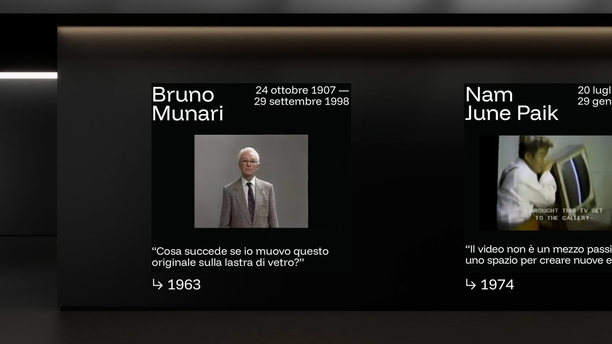
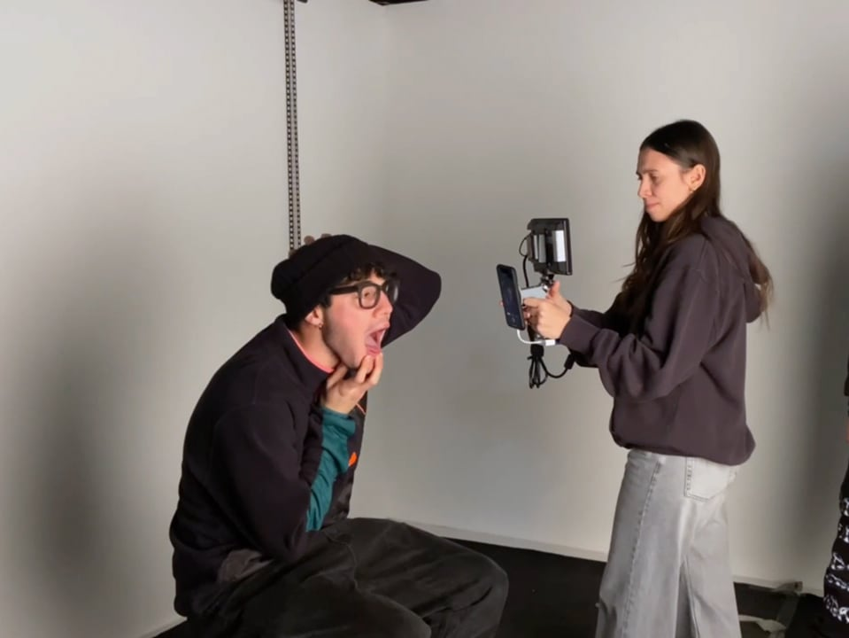
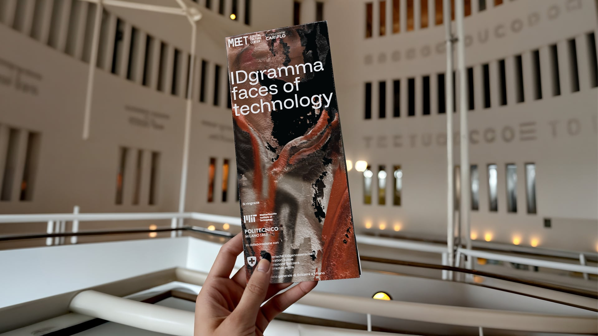
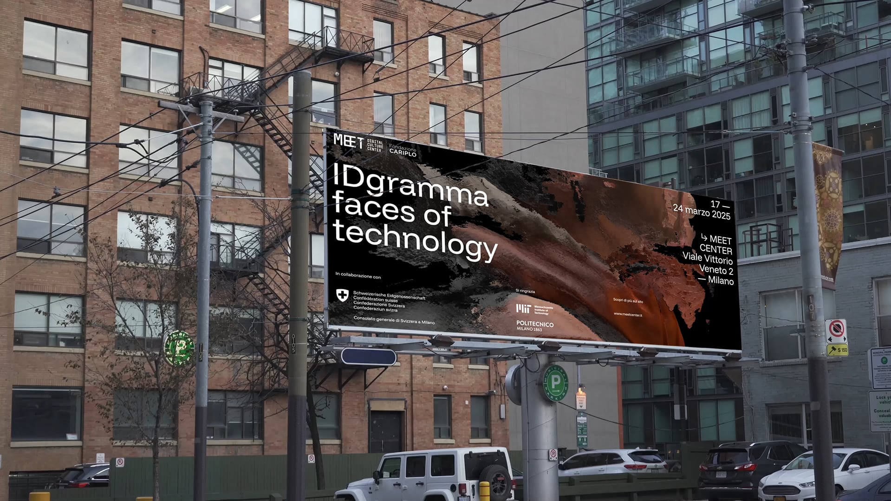
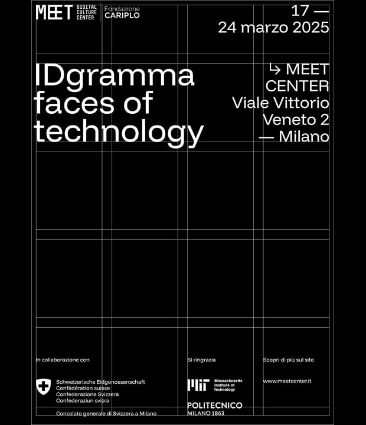
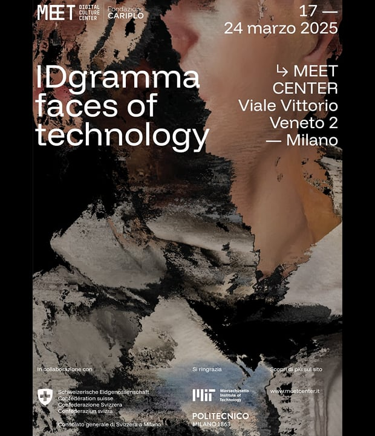
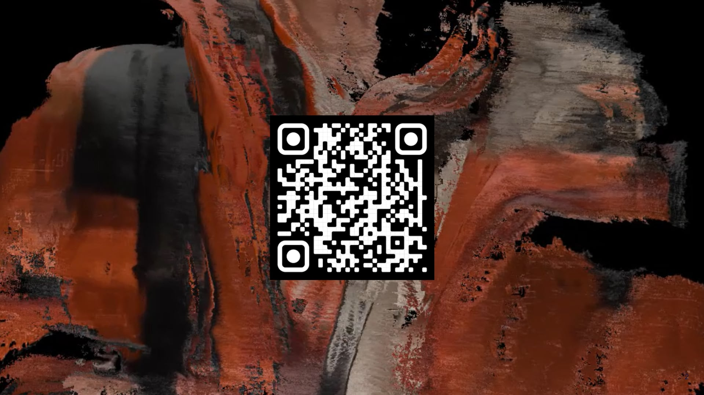

Historical Research on Digital Art, Concept Development, Visual
Experimentation
IDgramma is an artistic experimentation project that investigates the
relationship between technology, error, and visual representation. The
project explores how the improper and unconventional use of digital
tools can generate new aesthetics and new meanings.

The project is situated within a historical and cultural reflection on
glitch art and, more broadly, on artistic practices that bend technology
to their own purposes, drawing references from xerography, television,
3D modeling, and digital manipulation.



The scans give rise to a coherent visual system that defines the
project’s identity. Fragmented faces, incomplete surfaces, and formal
glitches construct a language that reflects on the “faces of technology”
and its mediation of human identity.


IDgramma is also conceived as an exhibition experience, in which the
audience moves through a sequence ranging from historical
contextualization to the scanning of the subject. The user becomes an
active part of the process, shifting from observer to material of the
work.

Nessun cookie o tracciamento: questo sito non utilizza strumenti di
analytics o profilazione.